정보처리산업기사 (2012-08-26 기출문제)
1과목: 데이터 베이스
1. Which of the following does not belong to the DML statements of SQL?
- ALTER
- INSERT
- DELETE
- UPDATE
(정답률: 83%)

2. 이진탐색(Binary Search)을 하고자 할 때 구비조건으로 가장 중요한 것은?
- 자료가 순차적으로 정렬되어 있어야 한다.
- 자료의개수가 항상 짝수이어야 한다.
- 자료의 개수가 항상 홀수이어야 한다.
- 자료가 모두 정수로만 구성되어야 한다.
(정답률: 79%)
3. 제 1정규형에서 제 2정규형 수행시의 작업으로 옳은 것은?
- 이행적 함수 종속성 제거
- 다치 종속 제거
- 모든 결정자가 후보 키가 되도록 분해
- 부분 함수 종속성 제거
(정답률: 80%)
4. 데이터베이스의 정의와 거리가 먼 것은?
- 저장된 데이터
- 운영 데이터
- 공용 데이터
- 분리된 데이터
(정답률: 86%)
5. 다음의 설명 a 와 b 가 의미하고 있는 개념을 옳게 설명한 것으로 짝지어진 것은?
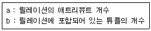
- a : 차수(degree) b : 레벨(level)
- a : 차수(degree) b : 카디널리티(cardinality)
- a : 레벨(level) b : 카디널리티(cardinality)
- a : 레벨(level) b : 차수(degree)
(정답률: 89%)
6. 데이터베이스의 설계 과정 중 물리적 설계 단계의 수 행 사항이 아닌 것은?
- 저장 레코드 양식 설계
- 레코드 집중의 분석 및 설계
- 트랜잭션 인터페이스 설계
- 접근 경로 설계
(정답률: 74%)
7. 데이터베이스의 특징으로 옳은 내용을 모두 선택한 것은?
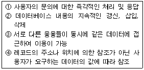
- ①, ②
- ②, ③, ④
- ①, ③, ④
- ①, ②, ③, ④
(정답률: 74%)
8. 릴레이션에 대한 특성으로 틀린 것은?
- 한 릴레이션에 포함된 튜플 사이에는 순서가 없다.
- 한 릴레이션을 구성하는 애트리뷰트 사이에는 순서가 없다.
- 모든 애트리뷰트 값은 원자값이다.
- 한 릴레이션에 포함된 튜플들은 모두 동일하다.
(정답률: 79%)
9. 뷰에 대한 설명으로 옳지 않은 것은?
- 사용자의 데이터 관리를 간단하게 해 준다.
- 뷰는 데이터의 접근을 제어하게 함으로써 보안을 제공한다.
- 뷰가 정의된 기본 테이블이 삭제될 경우 뷰는 자동적으로 삭제되지 않는다.
- 뷰는 데이터의 논리적 독립성을 어느 정도 제공한다.
(정답률: 80%)
10. 다음 그림의 이진트리를 Preorder로 운행한 경우 C 는 몇 번째로 탐색되는가?
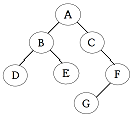
- 3번째
- 4번째
- 5번째
- 6번째
(정답률: 74%)
11. 다음 작업 중 큐와 관계되는 것은?
- 작업 스케줄링
- 수식 계산
- 인터럽트 처리
- 함수 호출
(정답률: 76%)
12. 관계대수와 관계해석에 대한 설명으로 옳지 않은 것은?
- 관계대수는 원하는 정보가 무엇이라는 것만 정의하는 비절차적인 특징을 가지고 있다.
- 관계해석은 관계 데이터의 연산을 표현하는 방법이다.
- 관계대수로 표현한 식은 관계 해석으로 표현할 수 있다.
- 관계해석은 원래 수학의 프레디킷 해석에 기반을 두고 있다.
(정답률: 77%)
13. 노킹에 대한 설명으로 옳지 않은 것은?
- 노킹의 대상이 되는 객체의 크기를 노킹 단위라고 한다.
- 노킹은 주요 데이터의 접근을 상호 배타적으로 하는 것이다.
- 노킹 단위가 크면 병행선 수준이 높아진다.
- 노킹 단위가 작아지면 노킹 오버헤드가 증가한다.
(정답률: 52%)
14. 다음 자료 구조 중 비선형 구조로만 짝지어진 것은?
- 에크, 트리
- 그래프, 트리
- 큐, 그래프
- 스택, 트리
(정답률: 83%)
15. 다음 인접 행렬(Adjacency Matrix)에 대응되는 그래프(Graph)를 그렸을 때 옳은 것은?
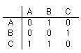
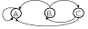
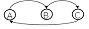
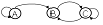
(정답률: 81%)
16. 버블 정렬을 이용한 오름차순 정렬시 다음 자료에 대한 1회전 후의 결과는?
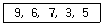
- 6,3,5,7,9
- 6,7,3,5,9
- 3,5,6,7,9
- 6,9,7,3,5
(정답률: 78%)
17. What is the properties of relations incorrectly?
- There are duplicate tuples.
- Tuples are unordered.
- Attributes are unordered.
- All attribute values are atomic.
(정답률: 61%)
18. 개체-관계(E-R) 모델에서 개체 타입을 표시하는 기호는?
(정답률: 77%)
19. 후보 키(Candidate key)가 되기 위한 두 가지 성질로 가장 타당한 것은?
- 유일성, 무결성
- 독립성, 최소성
- 유일성, 최소성
- 독립성, 무결성
(정답률: 66%)
20. 다음 설명의 괄호 안 내용으로 옳은 것은?
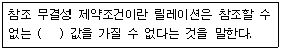
- 기본키
- 복합키
- 후보키
- 외래키
(정답률: 69%)
2과목: 전자 계산기 구조
21. 입력이 모두 “1”일 때만 출력이 “0”이고, 그 외는 “1”인 게이트는? (단, 정논리인 경우임)
- AND
- NAND
- OR
- NOR
(정답률: 69%)
22. 다음 보조기억장치 중 접근(access) 특성이 다른 것은?
- Magnetic Tape
- Magnetic Disk
- USB 메모리
- Magnetic Drum
(정답률: 62%)
23. 오퍼랜드(operand)가 레지스터를 지정하고, 다시 그 레지스터의 값이 유효주소가 되는 방식은?
- 직접 주소지정 방식
- 간접 주소지정 방식
- 레지스터 주소지정 방식
- 상대 주소지정 방식
(정답률: 49%)
24. 인터럽트를 발생하는 장치들을 직렬로 연결하는 하드웨어적인 우선순위 제어 방식은?
- interface
- daisy chain
- polling
- DMA
(정답률: 66%)
25. 다음 중 I/O채널(channel)에 대한 설명으로 틀린 것은?
- DMA의 확장된 개념으로 볼 수 있다.
- multiplexer 채널은 고속 입출력 장치용이고, select채널은 저속 입출력 장치용이다.
- I/O 장치는 제어장치를 통해 채널과 연결된다.
- I/O 채널은 CPU의 I/O 명령을 수행하지 않고 I/O채널내의 특수목적 처리명령을 수행한다.
(정답률: 58%)
26. 인터럽트 요인이 받아들여졌을 때 CPU가 확인해야 하는 사항에 불필요한 것은?
- 레지스터의 내용
- 상태 조건의 내용
- 스택 메모리의 내용
- 프로그램 카운터의 내용
(정답률: 43%)
27. MAR은 자료를 기억할 주소를 저장하는 레지스터인데 자료를 기억하거나 읽는 자료를 받는 레지스터는?
- PC
- MBR
- IR
- Accumulator
(정답률: 64%)
28. 8개의 플립플롭으로 된 시프트 레지스터(Shift Register)에 10진수로 64가 기억되어 있을 때 이를 오른쪽으로 3비트만큼 산술 시프트하면 그 값은?
- 4
- 8
- 12
- 24
(정답률: 66%)
29. 캐시메모리에서 특정 내용을 찾는 방식 중 매핑 방식에 주로 사용되는 메모리는?
- 버블 메모리
- 연관 메모리
- 가상 메모리
- 스택 메모리
(정답률: 43%)
30. 명령어 형식 중 컴퓨터에서 가장 널리 사용되는 형식으로, 입력 자료가 연산된 후에는 보존되지 않지만 실행속도가 빠르고 기억 장소를 많이 차지하지 않는 형식으로 오퍼랜드 1의 내용과 오퍼랜드 2의 내용을 더해 오퍼랜드 1에 기억시키는 형식은?
- 0-address 명령 형식
- 1-address 명령 형식
- 2-address 명령 형식
- 3-address 명령 형식
(정답률: 53%)
31. 기억장치와 입출력장치의 동작상 차이 중 가장 중요시 되는 것은?
- 정보의 단위
- 동작의 자율성
- 착오의 발생율
- 동작의 속도
(정답률: 68%)
32. 조합 논리 회로가 아닌 것은?
- 반가산기
- 디코더
- 멀티플렉서
- 플립플롭
(정답률: 55%)
33. 다음이 설명하고 있는 것은?
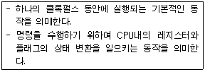
- Program Operation
- Fetch
- Count Operation
- Micro Operation
(정답률: 64%)
34. 제어신호 생성을 위해 다음 마이크로 명령어(micro instruction)의 주소를 결정하는데 사용되지 않는 것은?
- CAR의 값을 1 증가시킨 값
- 마이크로명령어 주소 필드
- 명령어 연산 코드
- 스택에 저장된 주소
(정답률: 39%)
35. 8비트 데이터 11011010에 11110000을 논리적으로 AND(즉, MASK)하면 그 결과는?
- 11010000
- 00001010
- 00100101
- 00000000
(정답률: 77%)
36. -426을 Pack 10진수 형식으로 표현한 것은?
- 0100 0010 0110 1101
- 0100 0010 0110 1100
- 1101 0100 0010 0110
- 1100 0100 0010 0110
(정답률: 42%)
37. 중앙처리장치에서 정보를 기억 장치에 기억시키는 것을 무엇이라 하는가?
- Load
- Store
- Fetch
- Transfer
(정답률: 72%)
38. 가산기능과 보수기능만 있는 산술논리연산장치(ALU)를 이용하여 F = A - B를 하고자 할 때 옳은 방법은?
- F = A - B
- F = A - B + 1
- F = A + B' + 1
- F = A' + B + 1
(정답률: 61%)
39. 2의 보수를 사용하는 컴퓨터에서 10진수 5와 11을 AND 연산하고 Complement 하였다면 결과는? (단, 연산시 4비트를 사용한다.)
- (1)10
- (2)10
- (-1)10
- (-2)10
(정답률: 39%)
40. 컴퓨터 주기억장치의 용량이 256MB라면 주소 버스의 폭은 최소한 몇 bit 이어야 하는가?
- 24
- 26
- 28
- 30
(정답률: 56%)
3과목: 시스템분석설계
41. 색인 순차 편성파일(indexed sequential file)의 각 구역 중 일정한 크기의 블록으로 블록화 하여 처리할 키 값을 갖는 레코드가 어느 실린더 인덱스 상에 기록되어 있는가를 나타내는 정보가 수록된 구역은?
- 마스터 인덱스 구역
- 실린더 인덱스 구역
- 트랙 인덱스 구역
- 기본 데이터 구역
(정답률: 47%)
42. 모듈(Module)에 대한 설명으로 옳지 않은 것은?
- 보기 좋고, 이해하기 쉽게 작성한다.
- 적절한 크기로 작성한다.
- 모듈 내의 응집도는 최소화한다.
- 업무 처리가 비슷한 처리에 부품처럼 공통으로 사용할 수 있다.
(정답률: 67%)
43. 특정 조건이 주어진 파일 중에서 그 조건에 만족되는 것과 그렇지 않은 것으로 분리 처리하는 표준 처리 패턴은?
- Update
- Distribution
- Collate
- Merge
(정답률: 72%)
44. 시스템의 특성 중 항상 다른 관련 시스템과 상호 의존관계를 유지하는 것을 의미하는 것은?
- 종합성
- 제어성
- 자동성
- 목적성
(정답률: 69%)
45. 소프트웨어 위기 현상과 거리가 먼 것은?
- 유지보수의 어려움과 유지보수 비용 증가
- 소프트웨어의 생산성과 품질 저하
- 개발 기간의 단축 및 개발 비용의 감소
- 개발 인력의 부족과 인건비 상승
(정답률: 62%)
46. 오류 검사 종류 중 차변과 대변의 한계값을 검사하는 방법으로 대치의 균형이나 가로, 세로의 합계가 일치하는가를 검사하는 것은?
- 체크 디지트 검사
- 균형 검사
- 타당성 검사
- 형식 검사
(정답률: 73%)
47. 시스템의 기본 요소 중 입력된 데이터를 처리 방법과 조건에 따라 처리하는 것을 의미하는 것은?
- Control
- Process
- Feedback
- Output
(정답률: 62%)
48. 출력 방식에 의한 분류 중 다음 설명에 해당하는 것은?
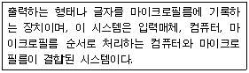
- 디스플레이 출력 시스템
- 파일 매체 출력 시스템
- COM 시스템
- 음성 출력 시스템 방식
(정답률: 72%)
49. 자료 사전 작성시 고려사항으로 거리가 먼 것은?
- 중복된 정의를 허용한다.
- 갱신하기 쉬워야 한다.
- 명확한 정의 방식을 택한다.
- 이름을 이용해 정의를 쉽게 찾을 수 있어야 한다.
(정답률: 82%)
50. 파일 설계 단계 중 파일의 활동률을 확인하는 단계는?
- 파일 매체 검토
- 파일 편성법 검토
- 파일 항목 검토
- 파일 특성 조사
(정답률: 59%)
51. 객체의 특성으로 옳지 않은 것은?
- 객체마다 각각의 상태를 가지고 있다.
- 행동에 의하여 그 특징을 나타낼 수 있다.
- 식별성을 가진다.
- 일정한 기억 장소를 가지지 않는다.
(정답률: 80%)
52. 순서도의 한 종류로 컴퓨터에서의 입력, 처리, 출력의 처리과정을 그림으로 표시하고, 전체적인 정보의 처리과정 및 논리구조의 파악, 컴퓨터의 사용시간 계산 등에 사용되는 순서도는?
- 시스템 Flowchart
- 프로세스 Flowchart
- 블록 Chart
- 프로그램 Flowchart
(정답률: 55%)
53. 발생한 데이터를 전표상에 기록하고, 일정한 시간 단위로 일괄 수집하여 입력매체에 수록하는 입력 형식은?
- 분산매체화 시스템
- 집중매체화 시스템
- 턴어라운드(turn around) 시스템
- 온라인 단말기 입력시스템
(정답률: 63%)
54. 코드의 오류 발생 형태 중 좌우 자리가 바뀌어 발생하는 에러는?
- transcription error
- transposition error
- omission error
- addition error
(정답률: 77%)
55. 사원 번호의 발급 과정에서 둘 이상의 서로 다른 사람에게 동일한 번호가 부여된 경우에 코드의 어떤 기능을 만족시키지 못한 것인가?
- 표준화 기능
- 식별 기능
- 배열 기능
- 연상 기능
(정답률: 74%)
56. 코드 설계 단계 중 다음 설명에 해당하는 것은?
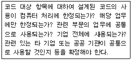
- 사용 범위의 결정
- 코드 목적의 명확화
- 코드 대상의 특성 분석
- 코드 부여 방식 결정
(정답률: 68%)
57. 소프트웨어 생명주기에 대한 각 단계의 설명으로 옳은 것은?
- 유지보수단계 : 사용자의 문제를 구체적으로 이해하고 소프트웨어가 담당해야 하는 영역을 정의하는 단계
- 운용단계 : 사용자의 문제를 정의하고 전체 시스템이 갖추어야 할 기본 기능과 성능을 파악하는 단계
- 설계단계 : 소프트웨어의 구조와 그 성분을 명확히 밝혀 구현을 준비하는 단계
- 계획단계 : 개발된 시스템이 요구사항을 정확히 반영하였는가를 테스트하는 단계
(정답률: 60%)
58. 시스템 도입시 고려 사항으로 거리가 먼 것은?
- 컴퓨터 시스템의 호환성
- 소요 예산 및 운영조직 확보
- 기기 규모의 적정성
- 프로그래머의 기술 능력
(정답률: 72%)
59. 다음의 입력 설계 단계 중 가장 먼저 행해지는 것은?
- 입력 정보 발생의 설계
- 입력 정보 매체의 설계
- 입력 정보 투입의 설계
- 입력 정보 수집의 설계
(정답률: 65%)
60. 파일의 내용에 의한 분류 중 마스터 파일을 갱신 또는 조회하기 위하여 사용하는 것으로서, 일시적 성격을 지닌 정보를 기록하는 파일은?
- Source data File
- Transaction File
- History File
- Summary File
(정답률: 61%)
4과목: 운영체제
61. 교착상태(DEAD LOCK) 발생의 필요조건이 아닌 것은?
- CIRCULAR WAIT
- MUTUAL EXCLUSION
- HOLD & WAIT
- PREEMPTION
(정답률: 62%)
62. UNIX에서 백그라운드 처리를 위한 명령과 관계되는 것은?
- &
- #
- +
- ^
(정답률: 57%)
63. 운영체제의 운용 기법 중 Round Robin 방식과 가장 밀접한 관계가 있는 시스템은?
- 일괄 처리 시스템
- 다중 프로그래밍 시스템
- 시분할 시스템
- 분산 처리 시스템
(정답률: 67%)
64. 기억장치 배치 전략 중 프로그램이나 데이터가 들어 갈 수 있는 크기의 빈 영역 중에서 단편화를 가장 많이 남기는 분할 영역에 배치시키는 기법은?
- FIRST FIT
- WORST FIT
- LARGE FIT
- BEST FIT
(정답률: 71%)
65. 4 개의 페이지를 수용할 수 있는 주기억장치가 현재 완전히 비어 있으며, 어떤 프로세스가 다음과 같은 순서로 페이지번호를 요청했을 때 페이지 대체 정책으로 FIFO를 사용한다면 페이지 부재(Page-fault)의 발생 횟수는?
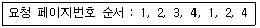
- 4회
- 5회
- 6회
- 7회
(정답률: 60%)
66. 분산 운영체제의 구조 중 모든 사이트는 하나의 중앙노드에 직접 연결되어 있으며, 중앙 노드에 과부하가 걸리면 성능이 현저히 감소하며, 중앙 노드의 고장시 모든 통신이 이루어지지 않는 구조는?
- ring connection
- star connection
- hierarchy connection
- fully connection
(정답률: 76%)
67. UNIX 파일 시스템 구조에서 디렉토리별로 디렉토리 엔트리와 실제 파일에 대한 데이터가 저장된 블록은?
- 부트 블록
- 슈퍼 블록
- I-node 블록
- 데이터 블록
(정답률: 41%)
68. 디렉토리 구조 중 중앙에 마스터 파일 디렉토리가 있고 그 아래에 사용자별로 서로 다른 파일 디렉토리가 있는 계층 구조는?
- 1단계 디렉토리 구조
- 2단계 디렉토리 구조
- 트리 디렉토리 구조
- 비순환 그래프 디렉토리 구조
(정답률: 59%)
69. 운영체제의 성능 평가 기준 중 일정 시간 내에 시스템이 처리하는 일의 양을 의미하는 것은?
- Turn Around Time
- Availability
- Reliability
- Throughput
(정답률: 43%)
70. 동시에 여러 개의 작업이 수행되는 다중 프로그래밍시스템 또는 가상기억 장치를 사용하는 시스템에서 하나의 프로세스가 작업 수행 과정에서 수행하는 기억장치 접근에서 지나치게 페이지 폴트가 발생하여 전체 시스템의 성능이 저하되는 것을 무엇이라고 하는가?
- Spooling
- Interleaving
- Swapping
- Thrashing
(정답률: 66%)
71. 강 결합 시스템(Tightliy Coupled System)의 특징에 해당하는 것은?
- 프로세서간의 통신은 공유 메모리로 이루어진다.
- 각 시스템은 자신의 운영체제를 가진다.
- 각 시스템은 자신만의 주기억장치를 가진다.
- 각 시스템간의 통신은 메시지 교환으로 이루어진다.
(정답률: 55%)
72. 프로세스보다 더 작은 단위이며, 다중 프로그래밍을 지원하는 시스템 하에서 CPU에게 보내져 실행되는 또 다른 단위를 의미하는 것은?
- BLOCK
- THREAD
- SUSPEND
- RESUME
(정답률: 68%)
73. 페이지 기법에 관한 설명으로 옳지 않은 것은?
- 페이지 크기가 작을수록 더 많은 페이지가 존재한다.
- 페이지가 크기가 클수록 더 큰 페이지 테이블 공간이 필요하다.
- 페이지 크기가 작을 경우 우수한 working set을 가질 수 있다.
- 페이지 크기가 클수록 참조되는 정보와는 무관한 많은 양의 정보가 주기억 장치에 남게 된다.
(정답률: 48%)
74. 하나의 프로세스가 자주 참조하는 페이지의 집합을 의미 하는 것은?
- working set
- locality
- paging
- fragmentation
(정답률: 72%)
75. 디스크의 SSTF 스케줄링 기법에 대한 설명으로 옳지 않은 것은?
- 먼저 도착한 요청이 먼저 서비스를 받는다.
- 응답시간의 편차가 크다.
- 일괄 처리에 유용하다.
- 헤드에서 멀리 떨어진 요청은 기아 상태가 발생할 수 있다.
(정답률: 49%)
76. HRN 스케줄링 기법을 적용할 경우 우선순위가 가장 높은 것은?
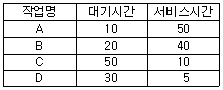
- A
- B
- C
- D
(정답률: 62%)
77. 페이지 교체 알고리즘 중 참조 비트와 변형 비트가 사용되는 것은?
- LFU
- LRU
- NUR
- FIFO
(정답률: 65%)
78. 다음 중 천재지변이나 사고로 인해 정보의 손실이나 파괴를 막기 위해 취할 수 있는 방법으로 가장 올바른 것은?
- 파일시스템을 체계적으로 잘 정리한다.
- 백업(Back-up)을 주기적으로 실시하여 안전한 곳에 보관한다.
- 컴퓨터에 안전장치를 하고, 필요할 때만 조심해서 사용해야 한다.
- 사고는 컴퓨터가 가동될 때만 발생함으로 사용 후에는 컴퓨터 전원을 반드시 꺼 놓는다.
(정답률: 80%)
79. 프로세스 스케줄링 알고리즘 중 준비 큐 사이의 프로세스 이동이 가능하도록 설계된 것으로서 특정 큐에서 오래 기다린 프로세스나 I/O 버스트 주기가 큰 프로세스 또는 foreground 큐에 있는 프로세스를 우선순위가 높은 단계의 준비 큐로 이동시키거나 CPU의 점유 시간이 긴 작업을 우선순위가 낮은 하위 단계의 준비 큐로 이동시킬 수 있게 하는 방법은?
- Round Robin
- Shortest Remaining Time
- Priority
- Multi-level Feedback Queue
(정답률: 42%)
80. 파일 디스크립터에 대한 설명으로 옳지 않은 것은?
- 보조 기억 장치상의 파일의 위치 및 최초 수정 날짜 및 시간에 대한 정보를 포함한다.
- 파일 시스템이 관리하므로 사용자가 직접 참조할 수 없다.
- 보조 기억 장치에 저장되어 있다가 파일이 개방(Open)될 때 주기억장치로 옮겨지는 것이 일반적이다.
- 파일마다 독립적으로 존재한다.
(정답률: 36%)
5과목: 정보통신개론
81. 디지털 변조 방식 중에서 전송속도를 높이기 위하여 위상과 진폭을 함께 변화시켜서 변조하는 방식은?
- ASK
- PSK
- FSK
- QAM
(정답률: 60%)
82. 다음 중 인터넷 응용서비스에서 가상 터미널(VT) 기능을 갖는 것은?
- FTP
- Gopher
- TELNET
- Archie
(정답률: 62%)
83. HDLC 프레임 구조 내 제어부에서 회선의 설정, 유지 및 종결을 담당하는 것은?
- 감독 프레임(Supervisory Frame)
- 무번호 프레임(Unnumbered Frame)
- 정보 프레임(Information Frame)
- 동기 프레임(Synchronize Frame)
(정답률: 38%)
84. 다음 중 DTE와 DTE 간에 RS-232C에 의한 직접접속(null modem)시 불필요한 것은?
- GND
- TxD
- RxD
- RTS
(정답률: 56%)
85. 변조속도 보오(Baud)에 대한 설명으로 옳은 것은?
- 1초 동안에 전송된 문자수
- 1초 동안에 전송된 스톱 펄스의 수
- 1초 동안에 전송된 최단펄스의 수
- 1초 동안에 전송된 비트의 수
(정답률: 43%)
86. 데이터 교환방식 중 에러제어가 제공되지 않는 것은?
- 메시지 교환방식
- 데이터 그램 패킷 교환방식
- 회선 교환방식
- 가상회선 패킷 교환방식
(정답률: 51%)
87. 동시에 양 방향으로 송수신이 가능한 통신 방식은?
- simplex mode
- store and forward mode
- half-duplex mode
- full-duplex mode
(정답률: 75%)
88. 데이터 회선의 접속방법 중 하나인 포인트 투 포인트(Point-to-Point) 방식에 대한 설명으로 틀린 것은?
- 회선 구성이 간단하고 대용량 전송에 적합하다.
- 두 대의 스테이션 간 별도의 회선을 사용하여 1대1로 연결하는 가장 보편적인 방식이다.
- 송수신하는 스테이션들을 식별하기 위해 각 스테이션들이 고유의 주소를 가져야 한다.
- 별도의 회선과 통신 포트(port)가 필요하므로 설치비용이 많이 든다.
(정답률: 32%)
89. 아날로그 데이터를 전송하기 위해 디지털 형태로 변환하고 또한 디지털 형태를 원래의 아날로그 데이터로 복구시키는 것은?
- MODEM
- DSU
- CODEC
- FEP
(정답률: 52%)
90. 일단 통신경로가 설정되면 데이터의 형태, 부호, 전송 제어 절차 등에 의한 제약을 받지 않는 교환방식은?
- 패킷 교환방식
- 중계 교환방식
- 광 교환방식
- 회선 교환방식
(정답률: 49%)
91. 인터넷 상에서 파일을 다른 시스템으로 전송할 때 주로 이용되는 프로토콜은?
- TELNET
- SNMP
- FTP
- DNS
(정답률: 65%)
92. 주파수분할 다중화(FDM) 방식에서 보호대역(guard band)의 역할로 올바른 것은?
- 주파수 대역폭 확장
- 신호의 세기를 증폭
- 채널간의 간섭을 제한
- 많은 채널을 좁은 주파수 대역에 포함
(정답률: 70%)
93. 동기식 전송방식 중 비트지향성(bit oriented) 방식의 프로토콜이 아닌 것은?
- HDLC
- ADCCP
- BSC
- SDLC
(정답률: 53%)
94. LAN에서 사용되는 매체 액세스 제어 기법과 관련 없는 것은?
- TOKEN-BUS
- FDMA
- CSMA/CD
- TOKEN-RING
(정답률: 58%)
95. 송신측 펄스부호변조(PCM) 과정을 순서대로 나열한 것은?
- 부호화 → 양자화 → 표본화
- 양자화 → 표본화 → 부호화
- 표본화 → 양자화 → 부호화
- 표본화 → 부호화 → 양자화
(정답률: 74%)
96. 양방향 통신기능을 지닌 대화형 정보통신 서비스는?
- 비디오텍스
- 텔리텍스트
- 팩시밀리
- 라디오방송
(정답률: 45%)
97. 일반적으로 동질의 통신망 A와 B를 데이터 링크 계층(Data-link Layer)에서 연결하여 주는 장치로 필터링 기능을 가지고 있는 것은?
- 리피터(repeater)
- 라우터(router)
- 게이트웨이(gateway)
- 브리지(bridge)
(정답률: 47%)
98. 비 패킷형 단말기에서 조립, 분해 기능을 제공해 주는 일종의 어댑터는?
- APM
- PVC
- PAD
- PCR
(정답률: 59%)
99. OSI 7계층 중 서로 다른 기종의 컴퓨터 기종마다 다를 수 있는 정보의 표현 형식을 서로 이해할 수 있도록 공통의 구문형식으로 데이터를 변환하여 보내는 계층은?
- 물리 계층
- 응용 계층
- 표현 계층
- 데이터 링크 계층
(정답률: 60%)
100. 통신 프로토콜의 기본 3요소에 해당하지 않는 것은?
- 구문(Syntax)
- 의미(Semantic)
- 타이밍(Timing)
- 동기(Synchronization)
(정답률: 69%)